Project WheeljackOctober 2026
Vector
Code to production in one window.@B beside you.
Venkatesh Terikuti
Or use the arrow keys and the buttons below.
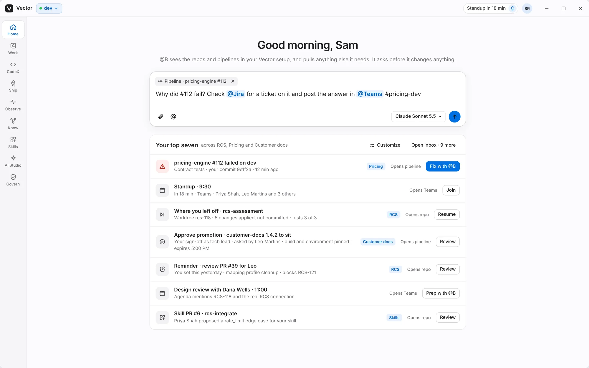
WhyToday
One change. Seven tools.
Every tool holds part of the answer. Putting it together is the job nobody planned for.
- JiraThe ticket
- BitbucketThe code
- JenkinsThe build
- RafayThe deploy
- Grafana · Dynatrace · Splunk · LogHubThe signals
- ConfluenceThe docs
- TeamsThe conversation
Vector brings them into one window. Each tool stays the source of truth. @B works across all of them.
WhyThe rules
Five rules behind every screen.
- One environment per windowPick dev, sit, uat, perf, cte or prod. Everything follows.
- @B on every page, and in TeamsOne conversation that moves with you.
- Work happens in the repo or the pipelineEvery path leads to CodeX, the build or the deploy.
- Every page looks like the tool you knowVS Code, Jenkins, Rafay, Grafana. Nothing new to learn.
- @B can only do what you can doAnd it asks before it changes anything.
MorningThursday · 9:12
Start with what needs you.
@B in the center. Below it, the seven things that matter today, across every app you work on.
- 1One environmentPick it once. The whole window follows.
- 2Next meetingOne reminder in the title bar. Change it from the bell.
- 3Ask @BAttach context, tag a tool, pick a model.
- 4Your top sevenFailures, meetings, approvals, reviews and reminders, ranked.
- 5One action eachEvery row opens the repo, the pipeline or Teams.
- 6Nine spacesEverything else is one click away.
Morning9:13
Context, tools and models, on demand.
The composer stays simple until you need more.
- 1AttachRepos and pipelines from your setup, plus logs, skills and files.
- 2MentionJira, Teams, Outlook, Confluence, Bitbucket, Rafay and DEVHUB.
- 3ModelClaude, GPT or Gemini. Only what your org approved.
- 4ReminderChoose what the title bar shows, or add your own.
- 5CustomizePick the sources and the order. Your own broken builds stay on top.
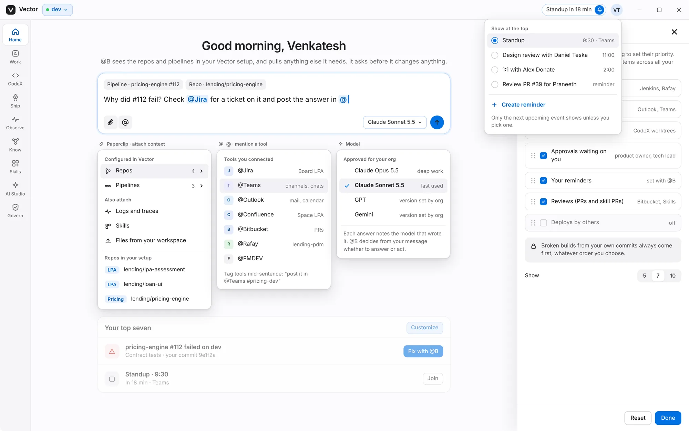
12345The work9:15
Everything you own, at a glance.
Tickets, reviews and approvals as tiles. Each one opens where the work happens.
- 1Boards and filtersPick a Jira board, then filter the way Jira does.
- 2Progress on every tileCriteria met and how far the change has travelled.
- 3Reviews by repoOpens the PR in CodeX.
- 4Approvals by pipelineEach waits on the product owner and the tech lead.
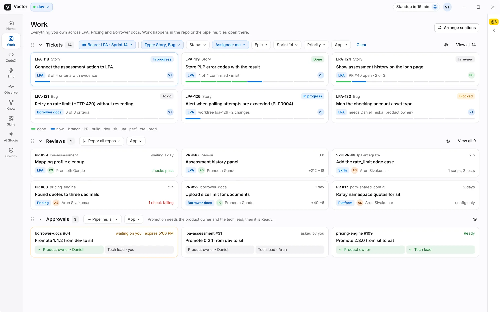
1234The work9:16
RCS-118. Done, with proof.
Every acceptance criterion shows the evidence behind it.
- 1Evidence per criterionTests, checks and the mock run, linked.
- 2You confirm@B suggests the tick. A person signs off.
- 3One timelineCode, builds, chats and Jira in one place.
- 4Straight to workOpen the repo or the pipeline.
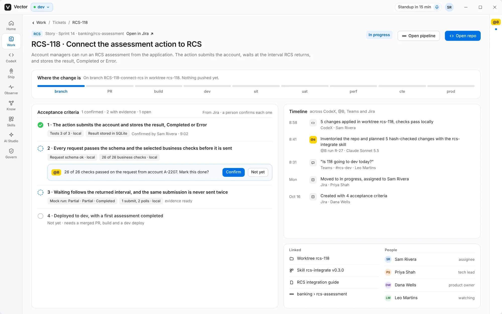
1234Build it9:20
CodeX. It's VS Code.
Built on the open-source VS Code core, with @B working alongside you.
- 1WorktreesOne per feature. Each carries its ticket.
- 2Checked changesEvery file matches the plan @B showed.
- 3Checks firstTests, 26 business checks and the mock run.
- 4@B, in contextThe same conversation, now beside the code.
- 5One next step@B drafts the commit and the PR. You send it.
- 6Status barBranch, app, ticket and environment.
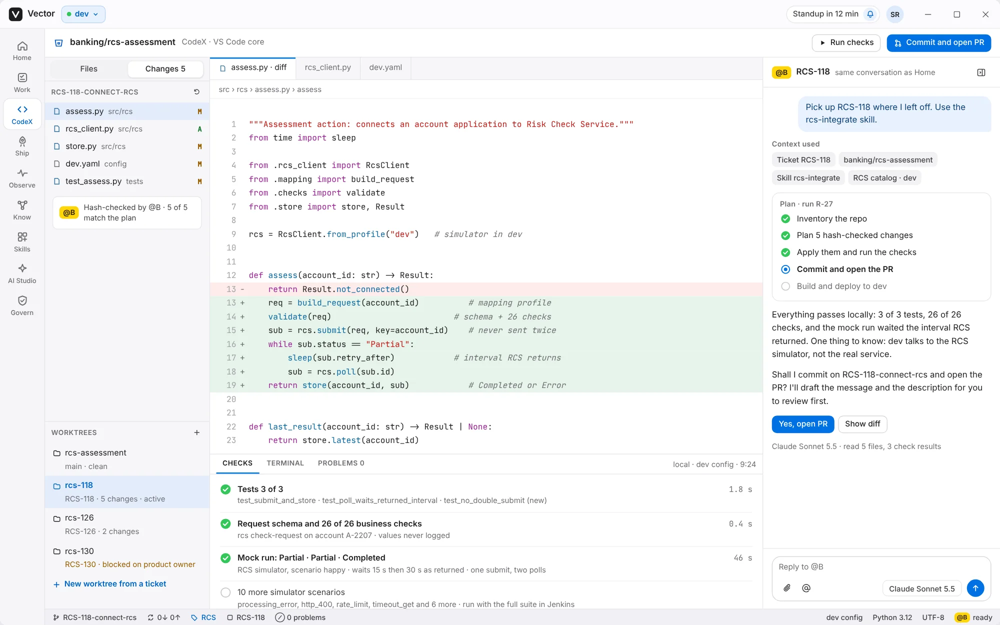
123456Build it9:30
Review with a second pair of eyes.
PRs open in the same editor, with @B's summary beside the diff.
- 1Approve or request changesRight in the top bar.
- 2PR summaryWhat changed, the risk and the tests that cover it.
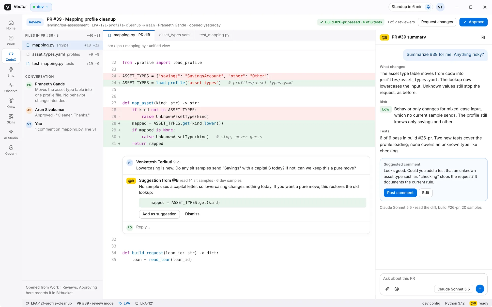
12Build it9:34
Tag it once. Find it everywhere.
The application tag set at clone time follows the repo's tickets, PRs, builds and approvals.
- 1Application tagFilter by app on any page.
- 2Shared setupStart from a teammate's template. Never their credentials.
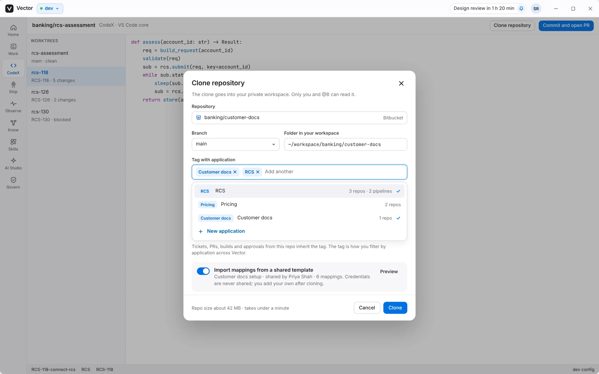
12Ship it9:41
Jenkins, exactly as you know it.
Build and deploy sit side by side, in the layouts your team already uses.
- 1Familiar layoutBreadcrumbs, tasks and build history.
- 2Stage viewBuild #27 is deploying to dev.
- 3ConsoleThe full log, one click away.
- 4Deploy tabRafay, one tab over.
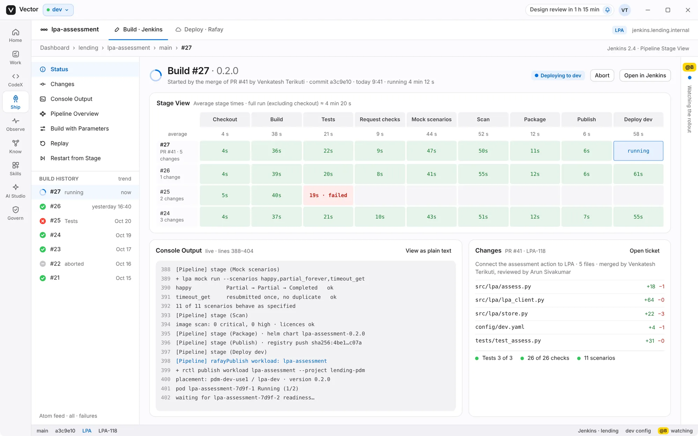
1234Ship it9:46
Deployed to dev. Checked first.
Rafay's own layout, with every environment in one table.
- 1Six environmentsCluster, namespace and version for each.
- 2Safe rolloutThe old version serves until the new one is ready.
- 3Six checksTarget, config, simulator, storage, rollback and access.
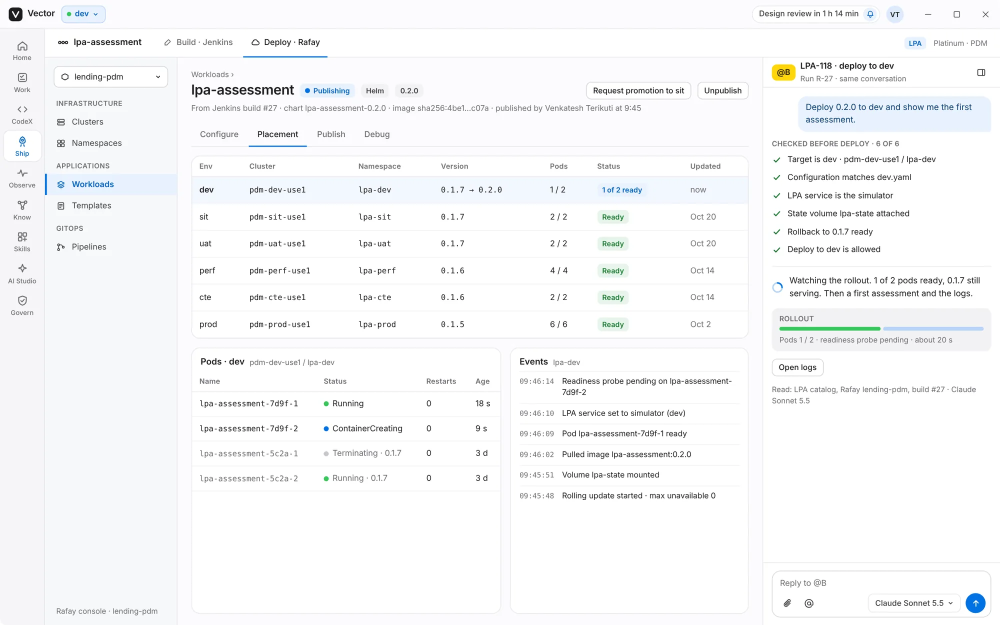
123Ship it9:52
The first assessment. Proven in the logs.
One submission. Each wait taken from RCS's response. Completed in 46 seconds.
- 1App firstThen cluster, namespace, pod and level.
- 2Run timelineSubmit, wait, wait, completed.
- 3Codes, not dataAccount values never reach the logs.
- 4Close the loopConfirm the last criterion right here.
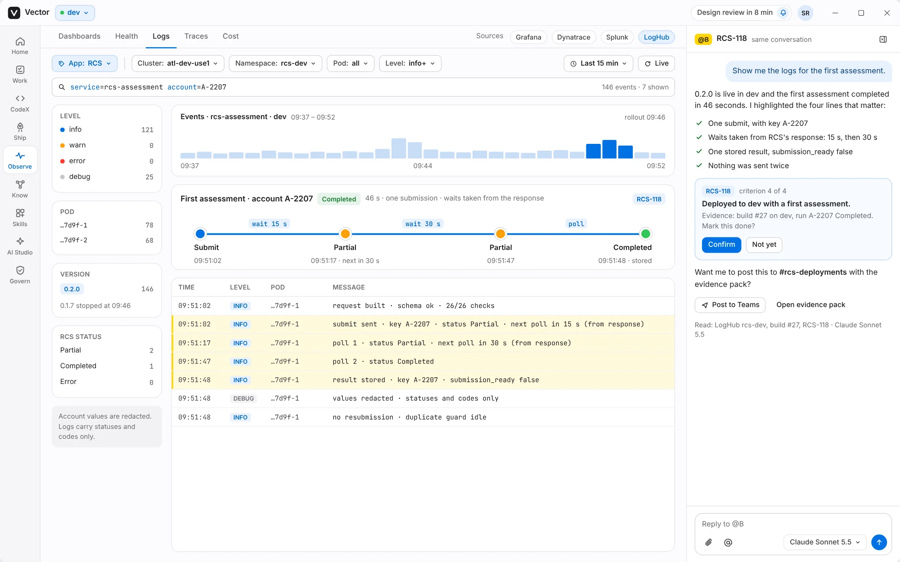
1234When it breaks10:01
A build breaks. Ask why.
@B reads the log, the commit and the schema, then shows its work.
- 1Plain questionAsked on Home, answered on the pipeline.
- 2Quoted linesThe exact log lines, with line numbers.
- 3Fix in the repoOpens CodeX in a new worktree, ready to review.
- 4Or change the contractDrafts a v3 schema and a ticket.
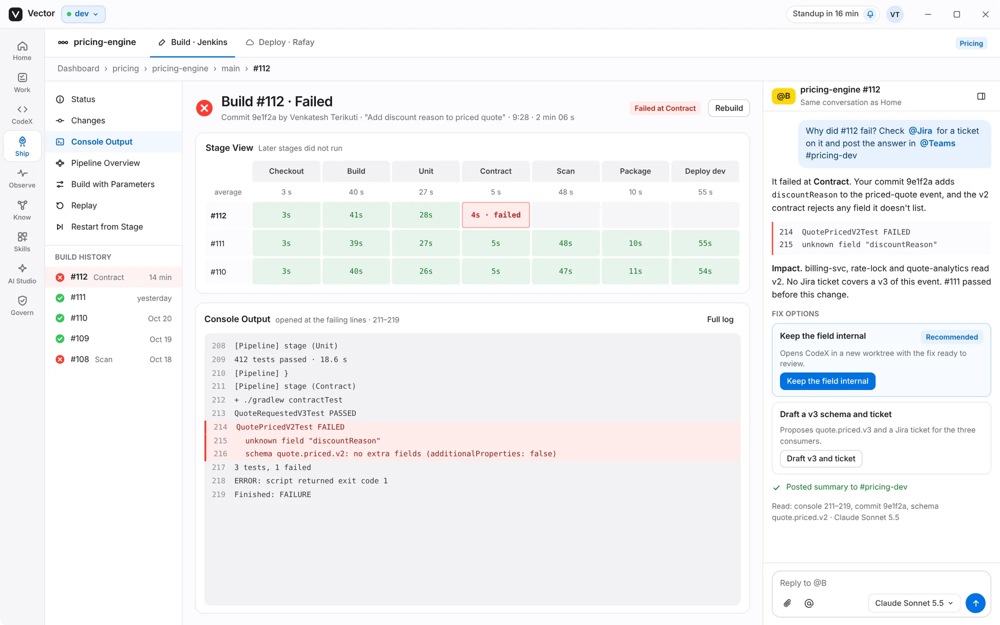
1234Watch it10:05
Dashboards you already read.
Grafana, Splunk, Dynatrace and LogHub on one page. Every panel names its source.
- 1Grafana-styleTime range, refresh and variables.
- 2Deploy markersSee exactly when things changed.
- 3Suggested alert@B spots the gap and offers the fix.
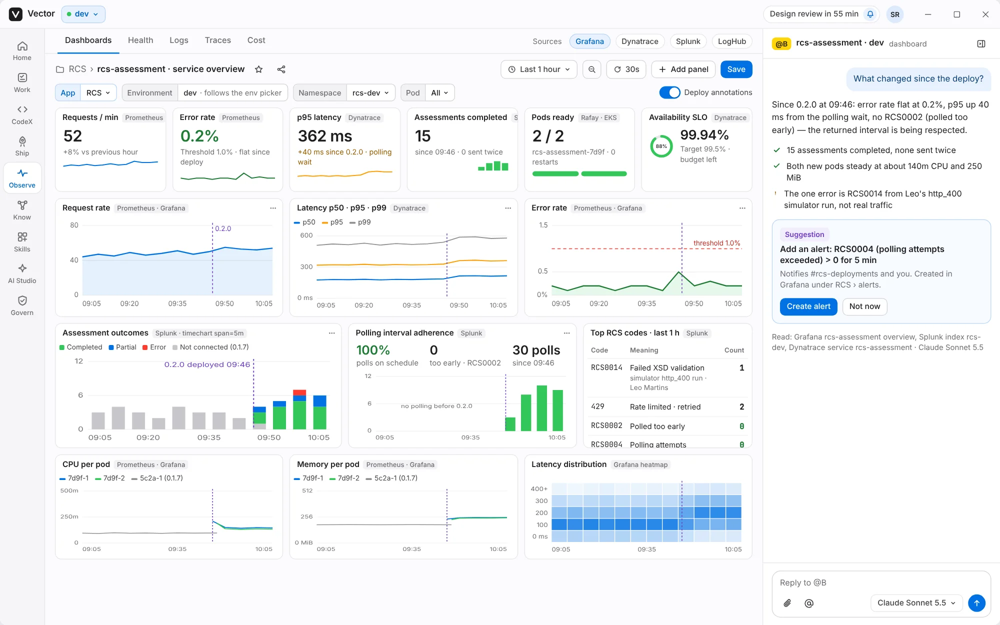
123Watch it10:40
Health, with the cause attached.
Problems, service flow and error budgets, in the style of Dynatrace.
- 1Root causeTwo sit samples use an account type the mapping doesn't know.
- 2Service flowWho calls whom, and how fast.
- 3Problem to fixOne click hands it to @B in Teams.
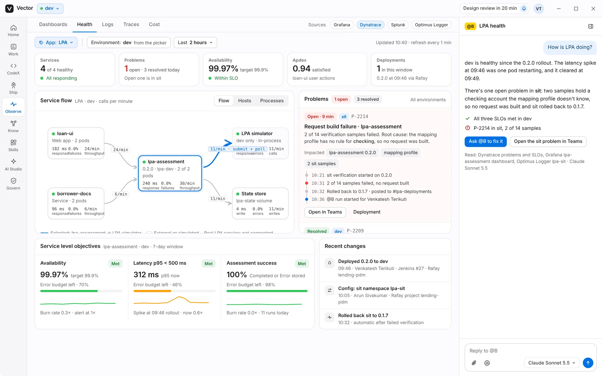
123Understand it10:44
See what talks to what.
Every connection, with the evidence that proves it.
- 1Dashed means plannedThe real RCS connection isn't built yet.
- 2Proof per lineCode, runtime calls and docs.
- 3Ask the map@B explains any part of it.
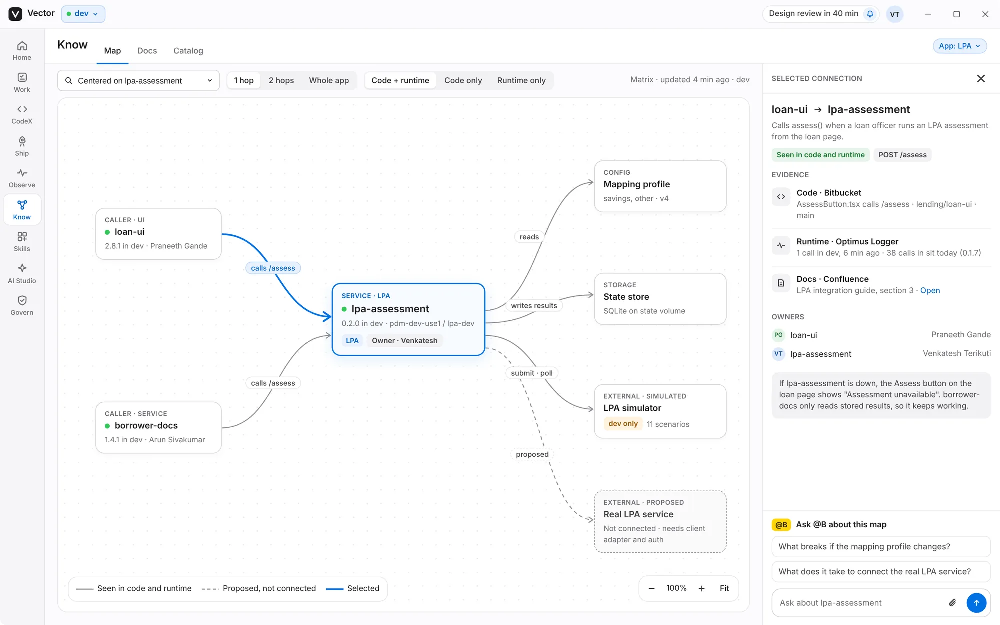
123Understand it10:46
The docs behind each app.
Confluence spaces and pages, grouped by the application they describe.
- 1By applicationFind the right page without searching.
- 2Ask the pageAnswers cite the section they came from.
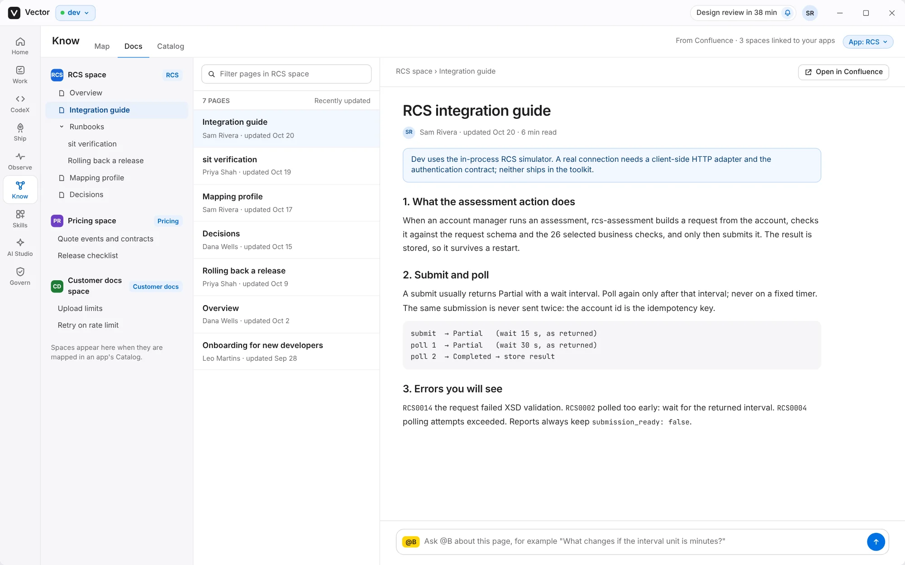
12Understand it10:48
Where @B looks first.
Each app's setup in one file: repos, jobs, namespaces, boards, channels, logs, rules and people.
- 1The starting pointEvery answer about RCS starts here.
- 2PrivateStored with your credentials. Only you can open it.
- 3Asks before writing@B proposes changes and waits.
- 4Share safelyTeammates get the mappings, never the secrets.
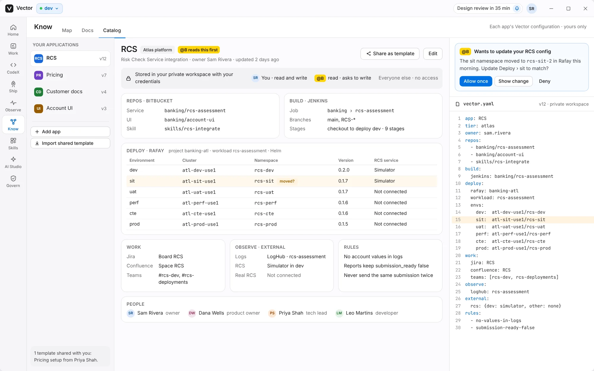
1234Teach @B10:52
Teach @B once. Every team benefits.
Skills are instructions and scripts, shared and improved like code.
- 1Edge cases as PRsReviewed by the owner, like any change.
- 2Use or forkRun it with @B or adapt it for your app.
- 3Drafts in MineTest it before anyone else sees it.
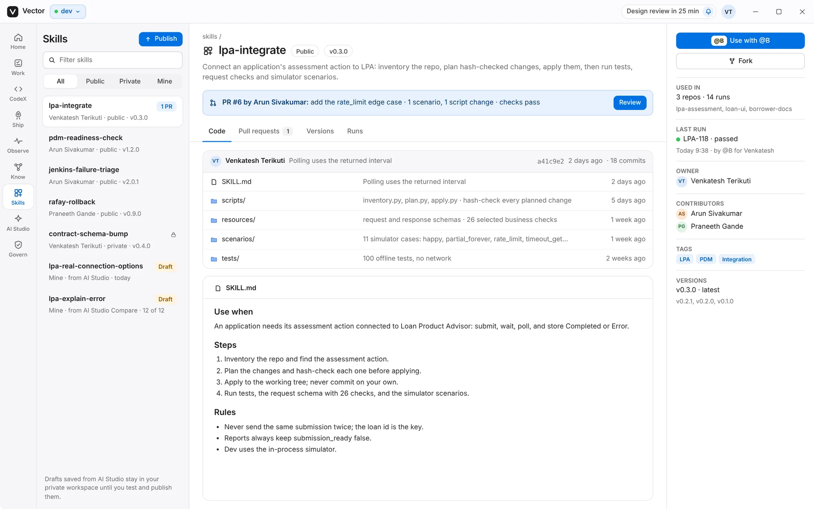
123Teach @B11:00
A playground for decision makers.
Big questions, answered with options, trade-offs and sources.
- 1Familiar controlsModel, temperature, sources and guardrails.
- 2GroundedAnswers start from the app's catalog.
- 3Keep what worksSave a good prompt as a draft skill.
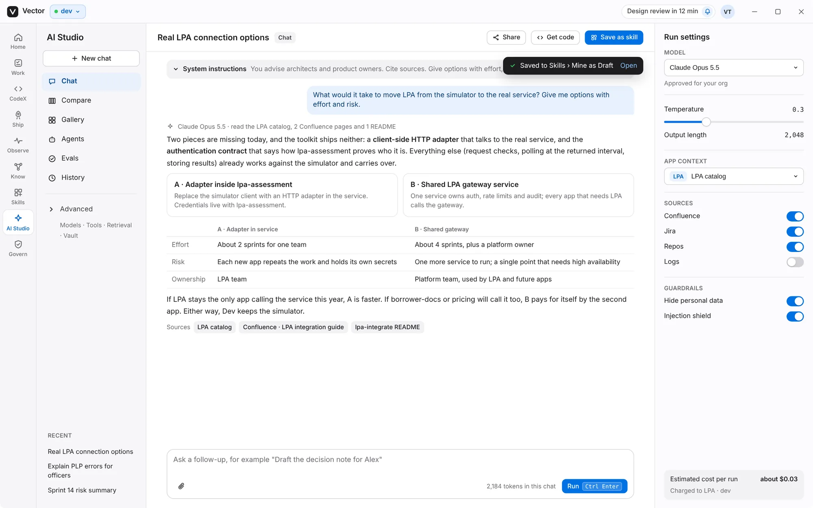
123Teach @B11:20
Three models. Same prompt. Scored.
See which model gets it right before it becomes a skill.
- 1MeasuredEvery answer checked against the same cases.
- 2Keep the bestSave the winner as a draft skill.
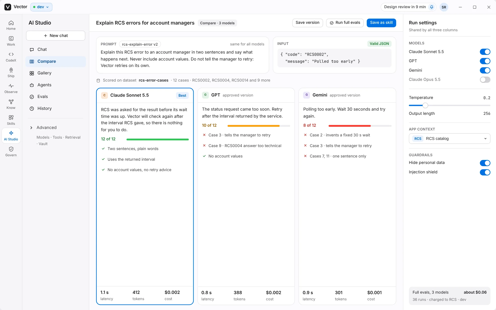
12Next day, in TeamsFriday · 10:36
sit fails. The team asks @B.
No tool hopping. The question goes in the thread, and the answer comes back there.
- 1Vector posts itRolled back automatically, with the numbers.
- 2One request@B works with the asker's access.
- 3Shows its workWhat it read and each step, live.
- 4Knows the lineIt won't force a check to pass.
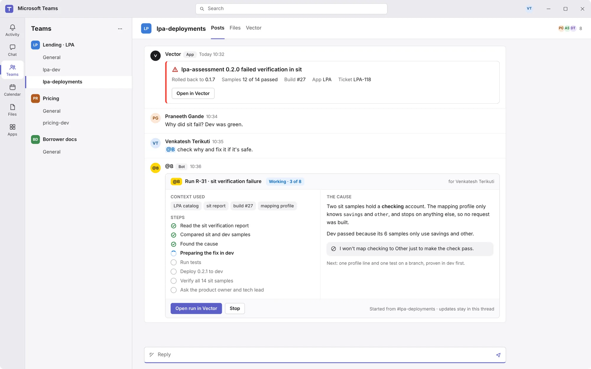
1234Next day, in Teams11:06
Product owner. Tech lead. Ready.
Two approvals, on the exact build that was proven in dev.
- 1Product ownerApproves what the change means.
- 2Tech leadApproves the exact build.
- 3Then promoteSame build. Nothing is rebuilt.
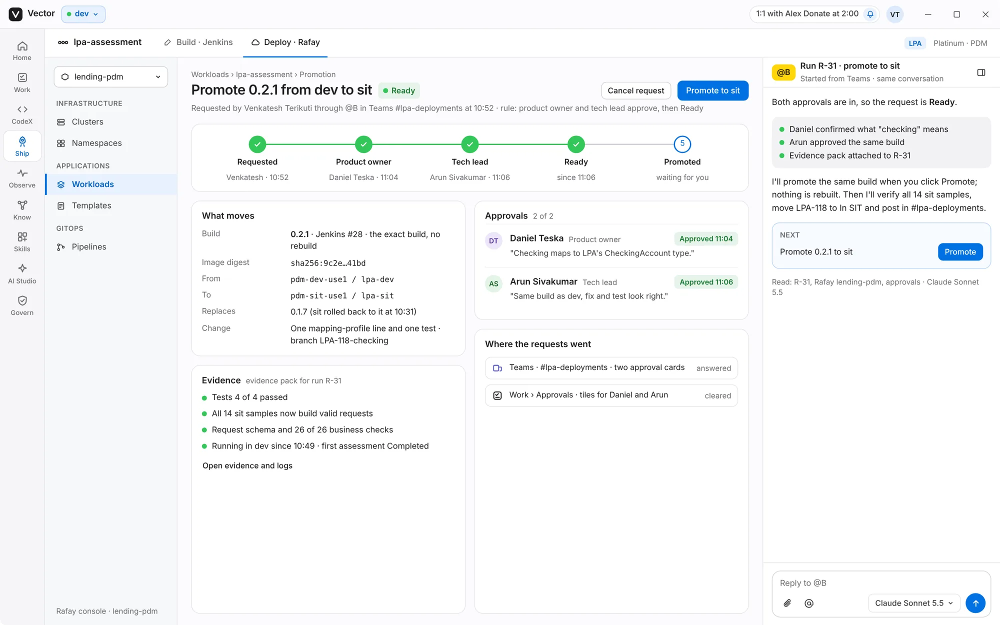
123Next day, in Teams11:14
Fixed in forty minutes. Learned for good.
sit is healthy, the ticket moves on, and the lesson becomes part of the skill.
- 1Proven firstVerified against every sit sample.
- 2HealthyThe full run is linked for later.
- 3Skill updateThe next app won't hit this.
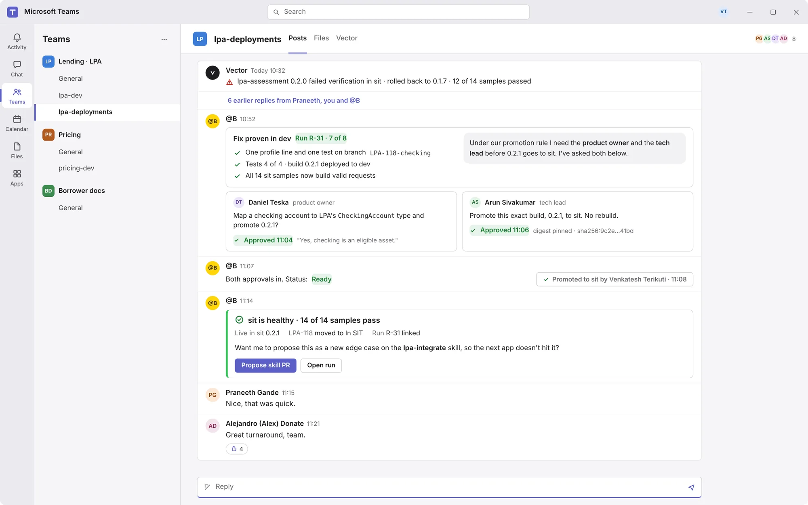
123Stay in control11:30
Every prompt, on the record.
From Vector, Teams chats and Teams groups.
- 1Every sourceFilter by place, person or app.
- 2Clear refusalsWhen @B can't, it says why.
- 3Full trailWhat @B read, the model and its reply.
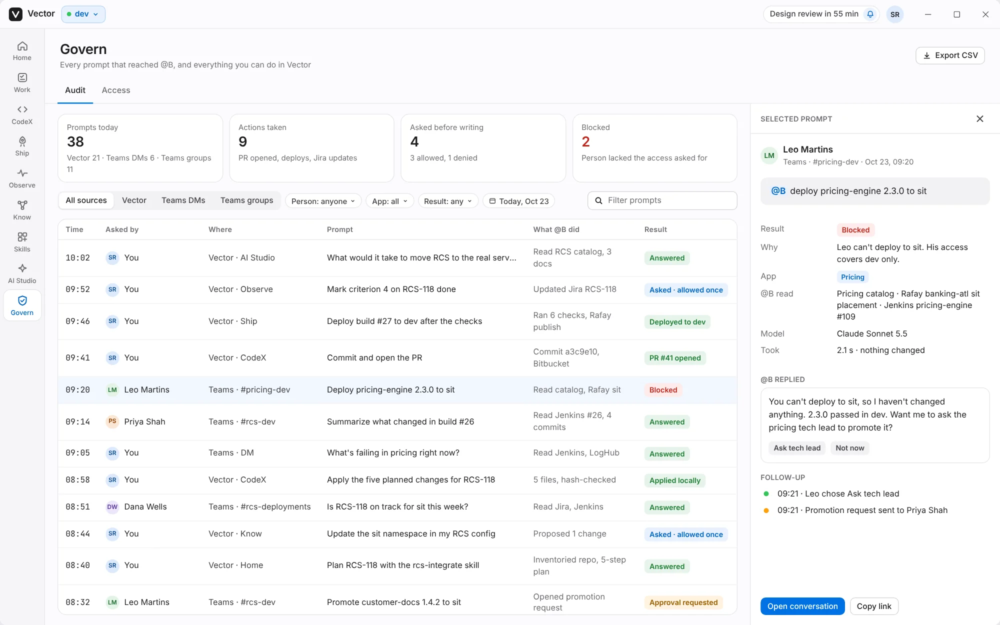
123Stay in control11:32
Know exactly what you can do.
Read, write, build, deploy and post, tool by tool.
- 1Your setupEvery row comes from your own workspace.
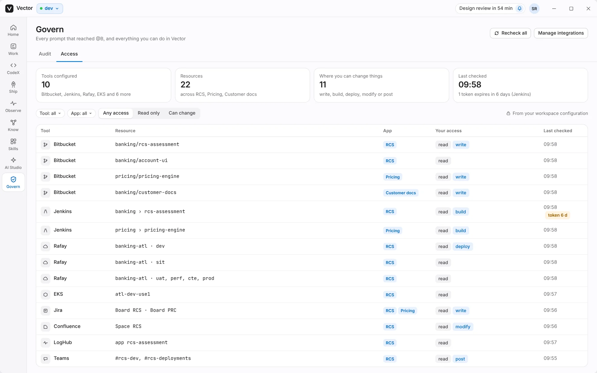
1Stay in controlAdmin
Your tools, connected.
Every integration, with its health.
- 1Status at a glanceExpiring tokens show up early.
- 2Add a toolEach one comes with a guide.
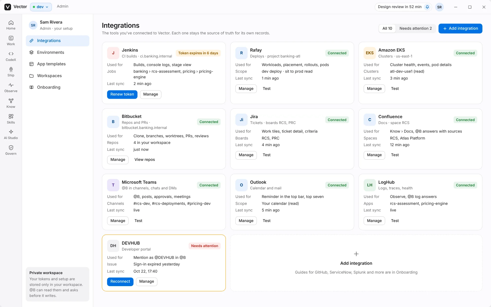
12Stay in controlAdmin
Six environments, clearly mapped.
dev, sit, uat, perf, cte and prod, in promotion order.
- 1Real targetsEach resolves to its Rafay project, cluster and namespace.
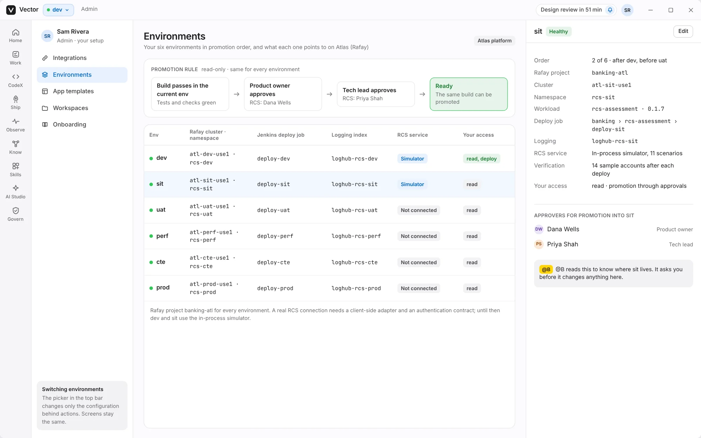
1Stay in controlAdmin
Share a setup, not your secrets.
Templates pass from person to person. Credentials never travel.
- 1Mappings onlyYou choose what to send.
- 2Import and adjustAnything you can't access is flagged.
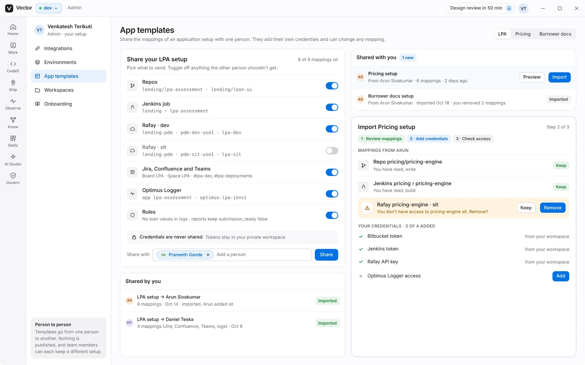
12Stay in controlAdmin
Your repos, all in one place.
App tag, branch and worktrees for each, one click from CodeX.
- 1Clone and tagNew repos start tagged.
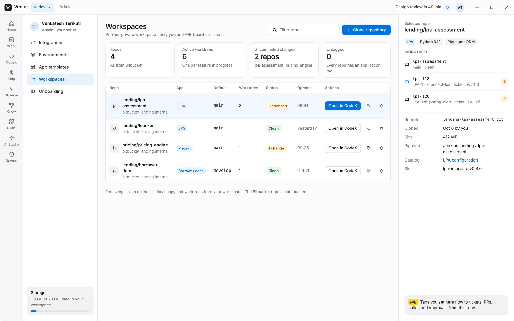
1Stay in controlAdmin
Set up in minutes.
A guide for every tool and every application.
- 1Step by stepWhat you need, what to do, and @B to help.
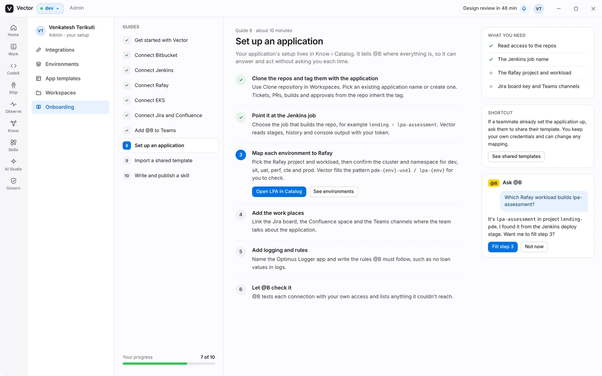
1CloseTwo days, one ticket
One window. The tools you know. @B beside you.
- ThursdayRCS-118 goes from ticket to working in dev, with proof for every criterion.
- FridayA sit failure is explained, fixed, approved and healthy in forty minutes, all in Teams.
- Every dayAnswers show their sources. Prompts are on the record. Lessons become skills.
Vector · Project Wheeljack · Sam Rivera